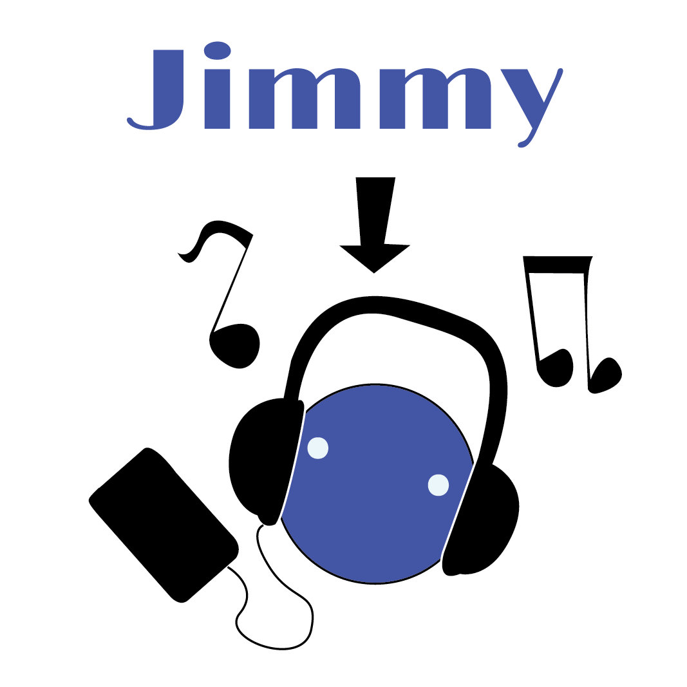
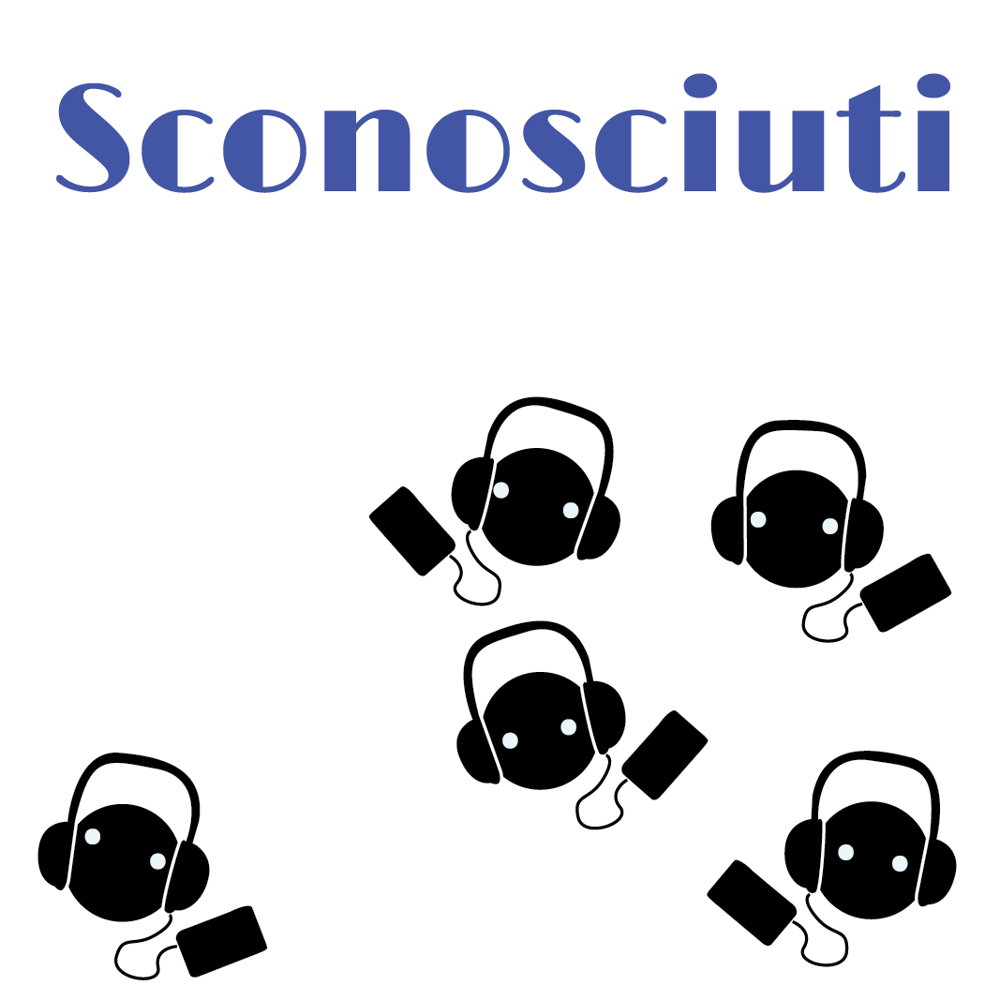
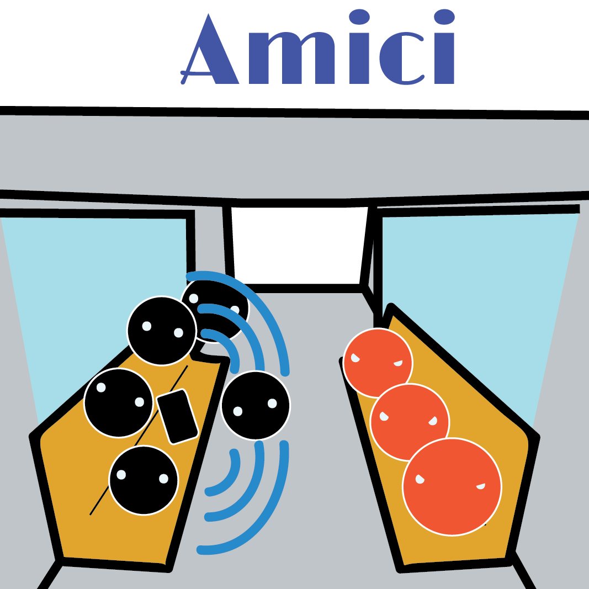
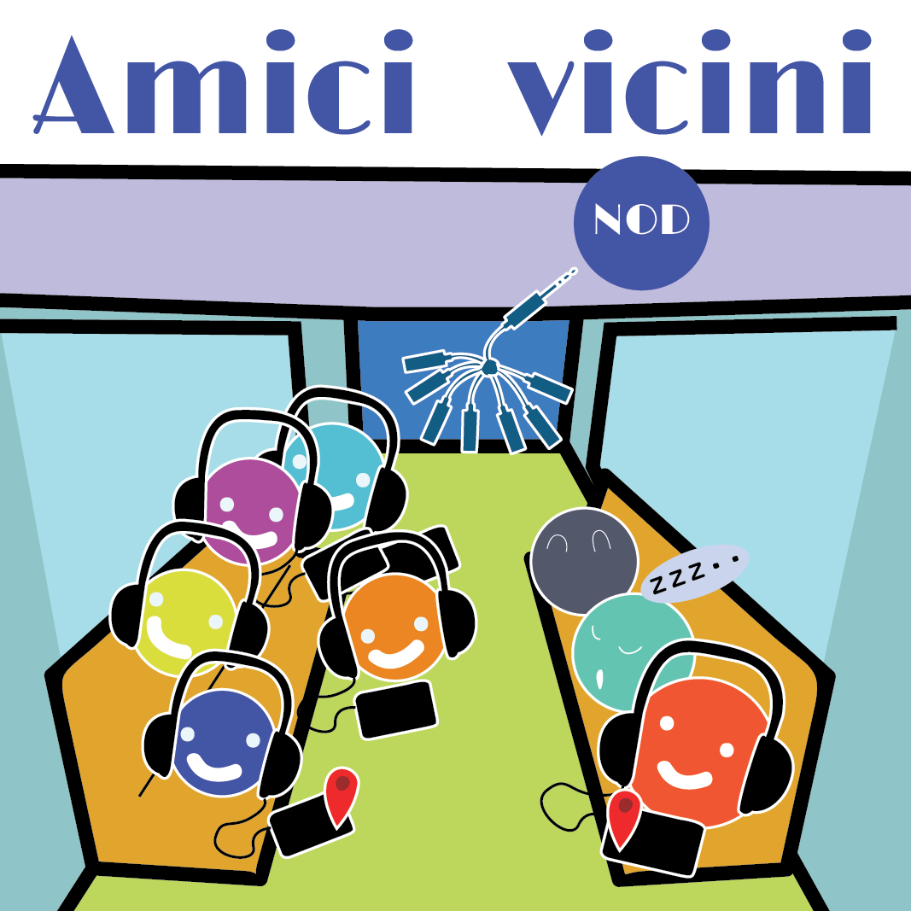
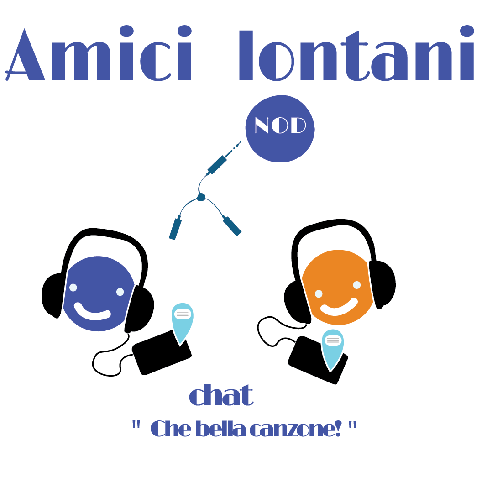
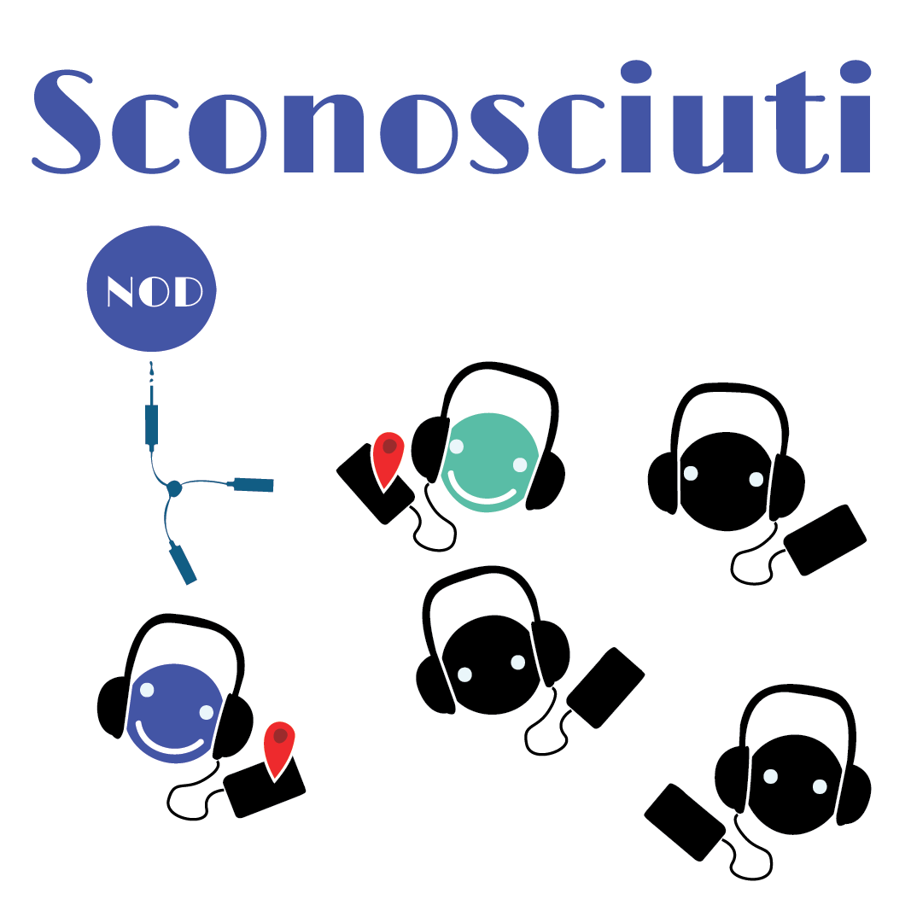
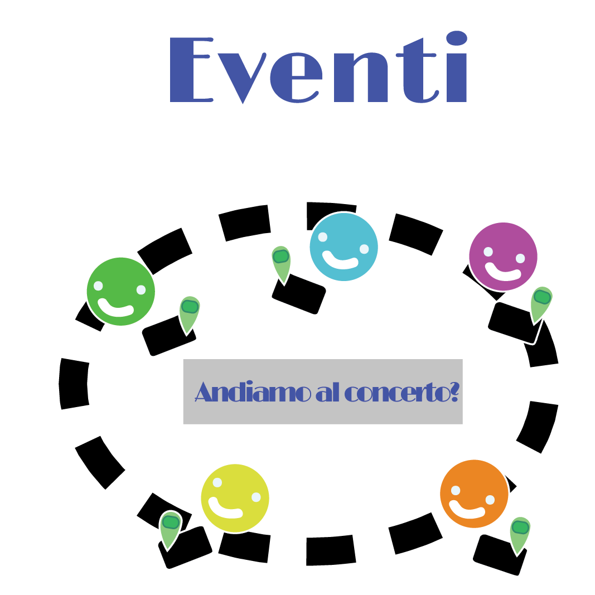
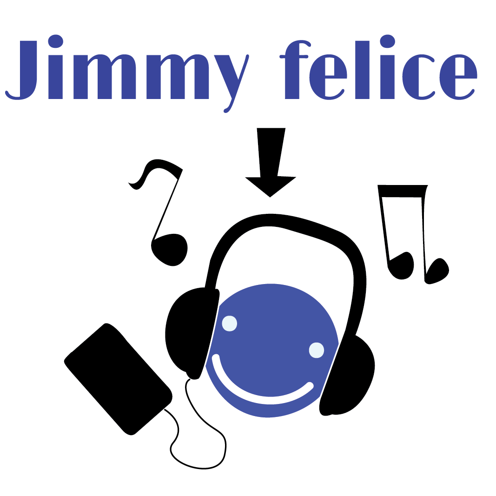

Low Poly project
A new way to share your music
Jimmy ascolto spesso musica sia a casa che quando è in giro, da solo o con cli amici!

Quando Jimmy cammina per l città ascoltando la sua musica, sente una sensazione di esclusione col mondo, ognuno ascolta la propria musica e manca uun contatto con le persone!

L'unico modo che jmmy ha per condividere istantaneamente con gli amici la loro canzone preferita è usare una cassa.
Ma a qualcuno potrebbe non piacere!

Con NOD Jimmy e i suoi amici possono acoltare e condividere la loro musica!
Nello stesso posto, contemporaneamente!
Cosi chi gli sta attorno, può dormire sonni tranquilli!

Inoltre, Jimmy ha anche la possibilità di convidere una canzone con un amico lontano.
Cosi possono sentirsi vicini, nonostante la distanza!

Grazie a Nod Jimmy può ascoltare una canzone con gli sconosciuti che si trovano nei suoi paraggi. Conoscerli.
La stessa colonna sonora, nello stesso momento, per persone diverse

In questo modo Jimmy può anche venire a conoscenza di concerti ed eventi in base al tipo di musica che adora ascoltare e , naturalmente , a quelli di cui è venuto a conoscenza grazie agli altri.

Adesso Jimmy è felice di poter condivedere e conoscere
Grazie a NOD
